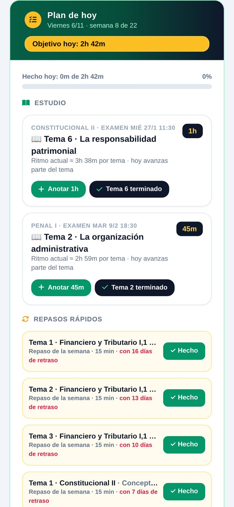
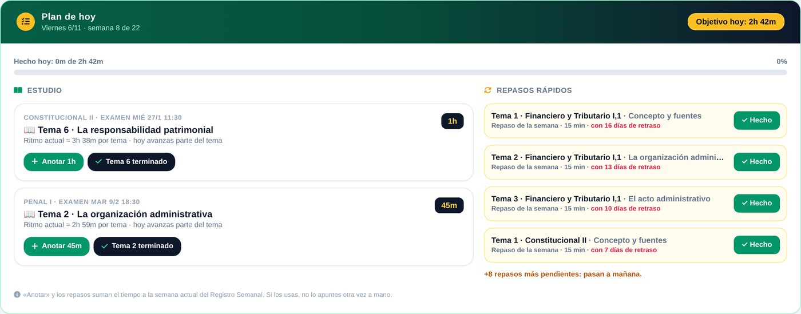
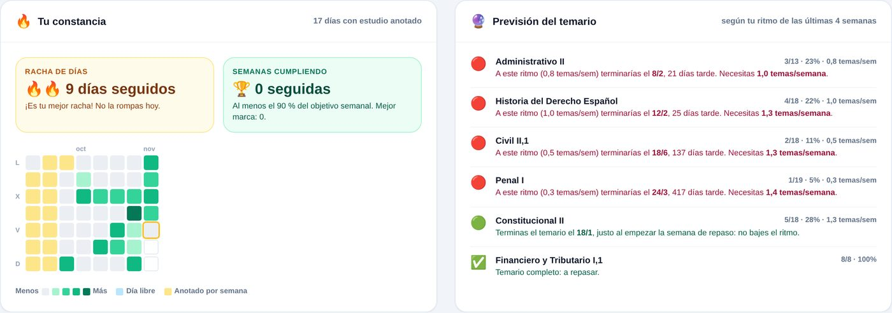
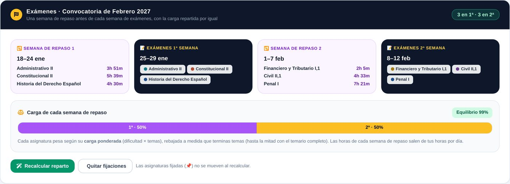
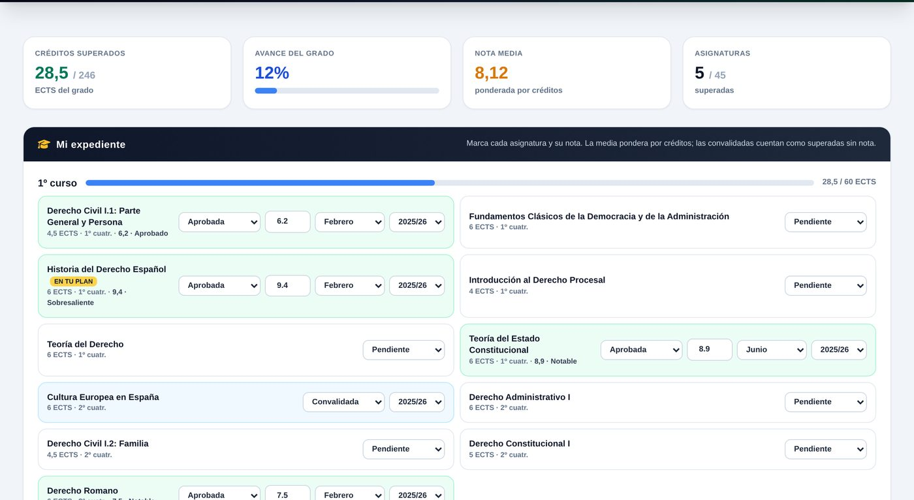
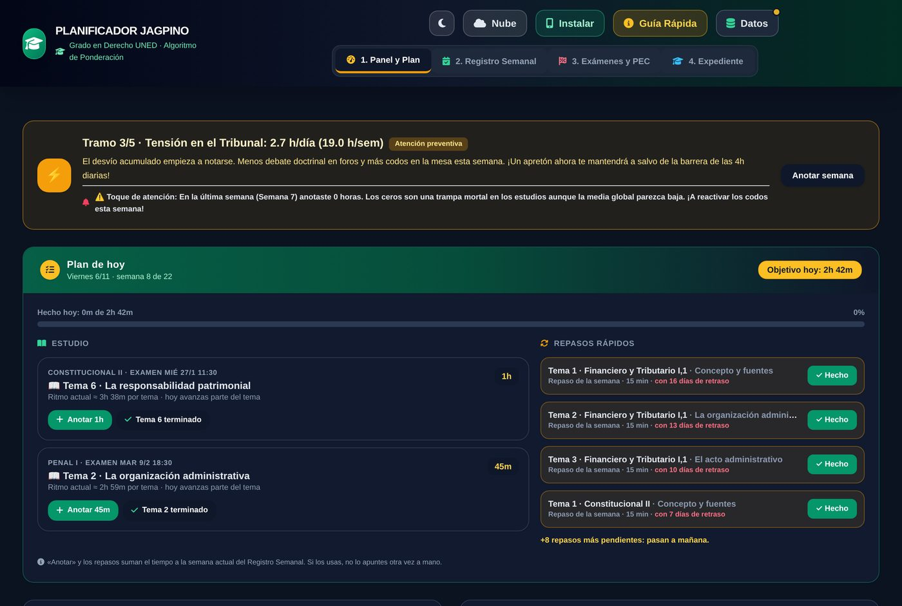

El Planificador Jagpino reparte tu temario según la dificultad de cada asignatura, tus horas reales y las fechas oficiales de exámenes y PEC. Y se reajusta solo cuando la vida se cruza.

Tus asignaturas, horas, temas y repasos vienen contigo. Elige tu caso:
✨ A partir de ahora ya no tendrás que hacer nada: cuando haya una versión nueva, la app te avisa con «Actualizar». Si usas varios dispositivos, conecta Google Drive en cada uno (Datos → Conectar con Google). Todo, paso a paso, en el manual.
Cada estudiante estudia a su manera: con apuntes impresos, en PDF, con el manual subrayado, con resúmenes propios o con los exámenes de otros años. El planificador no te impone un método. Planifica a partir de tus datos: qué asignaturas llevas, cuántos temas tiene cada una, cuántas horas tienes cada día y qué has hecho ya.
Pensado para quien estudia con trabajo, familia y poco tiempo.
Qué tema toca, cuánto tiempo y en qué asignatura, según tu disponibilidad real de ese día.
Cada tema terminado vuelve en un repaso rápido. Nunca después del examen.
Fechas oficiales de la convocatoria y reparto entre las dos semanas para equilibrar la carga de repaso.
Racha de días, mapa de calor y aviso si a tu ritmo no terminas el temario a tiempo.
Notas, créditos y media del grado. Si algo se resiste, monta el plan de septiembre en un clic.
Sincroniza con tu Google Drive o pasa los datos con un código QR. Instálalo como app.
El plan se recalcula cada día con lo que llevas hecho: si un día no puedes, el resto se reparte sin que tengas que rehacer nada.

La racha de días y el mapa de calor te enseñan cómo vas. La previsión te avisa a tiempo si al ritmo actual no llegas.

La app propone en qué semana presentarte a cada asignatura para que las dos semanas de repaso pesen lo mismo, según la dificultad y lo que llevas estudiado.

Las 45 asignaturas del grado con sus créditos. Apunta tus notas y mira cuánto te queda.

Automático según tu dispositivo o a tu elección, para estudiar de noche sin deslumbrarte.

Todo el funcionamiento, paso a paso y con ejemplos, más las preguntas frecuentes. Se puede imprimir o guardar en PDF.
Abrir el manual →Y cuántos temas tiene cada una, según tus apuntes o el manual.
Día a día: no es lo mismo un martes con trabajo que un sábado.
Anota lo que estudias y marca los temas. El plan se ajusta solo.
No. Si la tenías instalada, ciérrala y vuelve a abrirla: se actualiza sola con tus datos. Si usabas el archivo .html, ábrelo y pulsa «Instalar»: tus datos pasan a la versión nueva. Lo tienes paso a paso arriba y en el manual.
No, nunca. La app se actualiza sola al abrirla con internet y, desde la v29, te avisa cuando hay una versión nueva.
Sí, totalmente. No hay registro, ni publicidad, ni versión de pago.
En tu propio dispositivo. Si activas la sincronización, se guarda una copia en una carpeta oculta de tu Google Drive que solo esta app puede ver. Más detalles en la política de privacidad.
Sí. Ábrelo en el navegador y pulsa «Instalar»: tendrás su icono y funcionará también sin conexión.
Puedes pasar tus datos de un dispositivo a otro con un código QR o exportando una copia. También puedes crear una cuenta de Google con tu correo de siempre (Outlook, iCloud…), sin necesidad de Gmail.
Está hecho para el grado en Derecho de la UNED: lleva sus asignaturas, su dificultad relativa y su calendario oficial de exámenes y PEC.
No. Es un proyecto personal de un estudiante del grado. Comprueba siempre las fechas oficiales en el curso virtual y en la web de la UNED.
Abre el planificador, elige tus asignaturas y deja que él haga las cuentas. ¿Dudas? El manual lo explica todo.
Abrir el Planificador Jagpino →